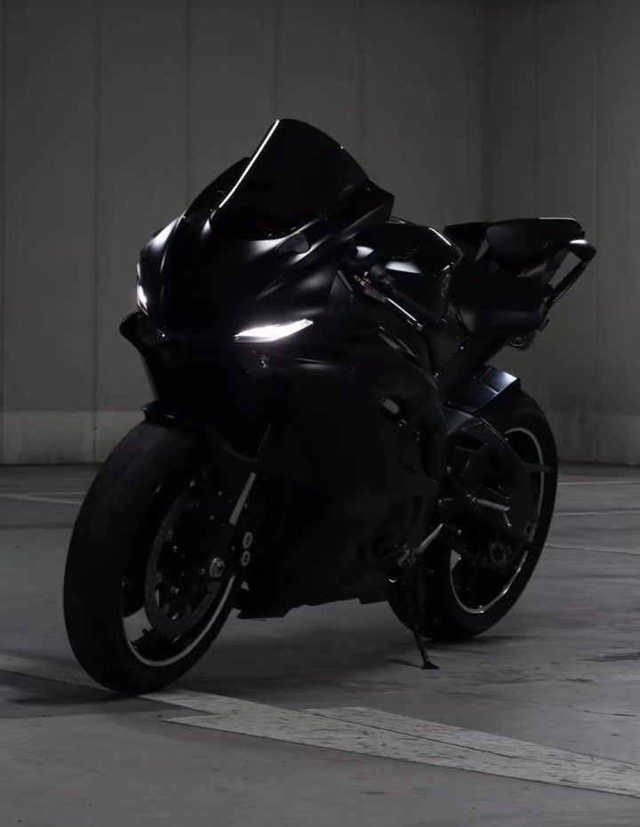

Sport Bike
Sport bikes are designed for speed, agility, and performance. They have a lightweight frame, aerodynamic bodywork, and high-revving engines that allow them to reach very high speeds quickly. The riding position leans the rider forward to reduce wind resistance and improve control at high speeds. These bikes are commonly used in racing and track events but are also popular with riders who love fast and sharp handling on the road. Examples: Yamaha YZF-R1, Kawasaki Ninja ZX-10R, Honda CBR1000RR.

Cruiser
Cruisers have a low seat height, wide handlebars, and a relaxed, laid-back riding position. They are made for comfortable long-distance rides rather than speed. Many cruisers have large engines with a deep rumbling sound and lots of torque, which gives them strong power at lower speeds. Their style is often inspired by classic American motorcycles from the mid-20th century. Examples: Harley-Davidson Softail, Indian Scout, Honda Rebel 500.

Dirt Bike
Dirt bikes are made for off-road adventures—riding on dirt trails, mud, sand, or rocky paths. They are lightweight with long suspension travel to absorb shocks from rough terrain. Their tires have deep treads (called knobby tires) for better grip. They usually don"t have lights or mirrors like road bikes because they"re meant for racing or trail riding rather than streets. Examples: KTM 250 SX-F, Yamaha YZ450F, Honda CRF450R.

Touring Bike
Touring motorcycles are built for long-distance travel and comfort. They often come with features like large windshields, comfortable seats for both rider and passenger, storage compartments, and advanced electronics (like GPS or sound systems). They have large engines capable of cruising easily at highway speeds for hours. These bikes are perfect for road trips or cross-country rides. Examples: Honda Gold Wing, BMW R1250RT, Harley-Davidson Electra Glide.

Café Racer
Café racers are retro-style motorcycles inspired by 1960s British racing culture. Riders would modify their bikes for speed and style, often riding between cafés—hence the name. These bikes have a minimalist design, low handlebars, and rear-set foot controls, which give a racing posture. They are known for their unique, vintage appearance rather than comfort. Examples: Royal Enfield Continental GT 650, Triumph Thruxton RS, Moto Guzzi V7 Racer.